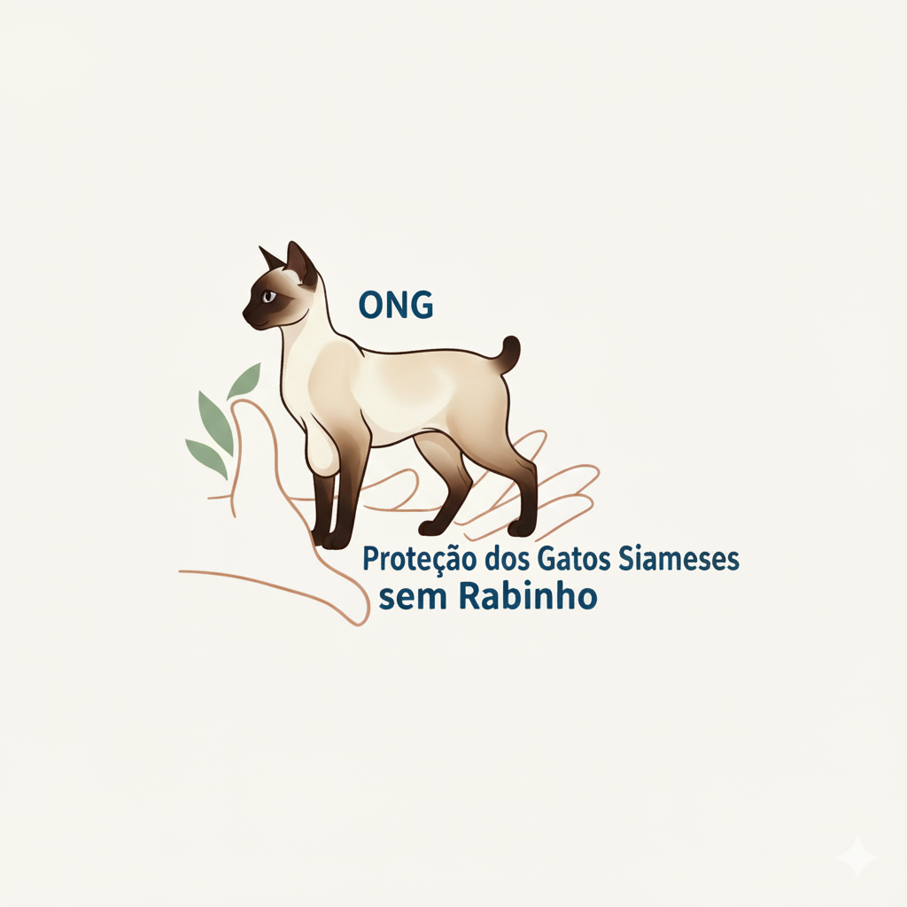
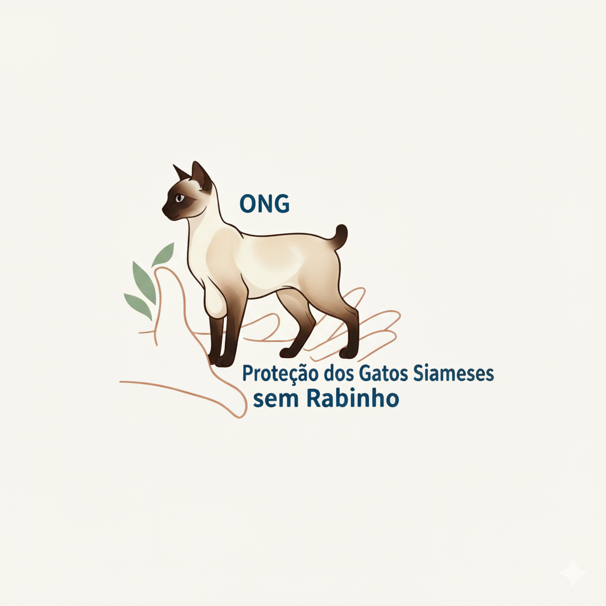

A história de Miau: superação e um novo lar
Introdução
Conheça a jornada emocionante de um de nossos resgatados mais recentes, que encontrou uma família amorosa e superou todos os desafios.
Acreditamos que toda vida felina é preciosa. Nossa ONG nasceu para dar voz e visibilidade a esses felinos únicos, garantindo que suas características especiais sejam vistas como um charme, e não um defeito.
Conheça a jornada emocionante de um de nossos resgatados mais recentes, que encontrou uma família amorosa e superou todos os desafios.
Isso é um mito! A grande maioria se adapta perfeitamente e leva uma vida normal e cheia de travuras. A ausência da cauda longa não afeta seu incrível equilíbrio felino.
Entre em contato conosco através dos seguintes canais:
E-mail: contato@ongsiameses.com.br
Telefone: (11) 99999-8888
Endereço: Rua dos Felinos, 123 - Vila Siamesa - São Paulo/SP
Estamos aqui para ajudar!
Este site é um projeto acadêmico. A ONG 'Proteção dos Gatos Siameses sem Rabinho', assim como todos os dados e estatísticas apresentados, são fictícios e foram criados exclusivamente para fins educacionais.